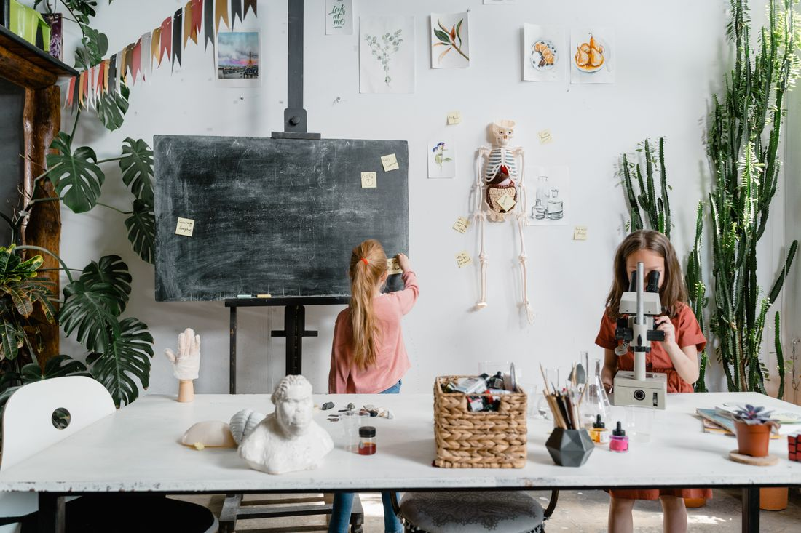
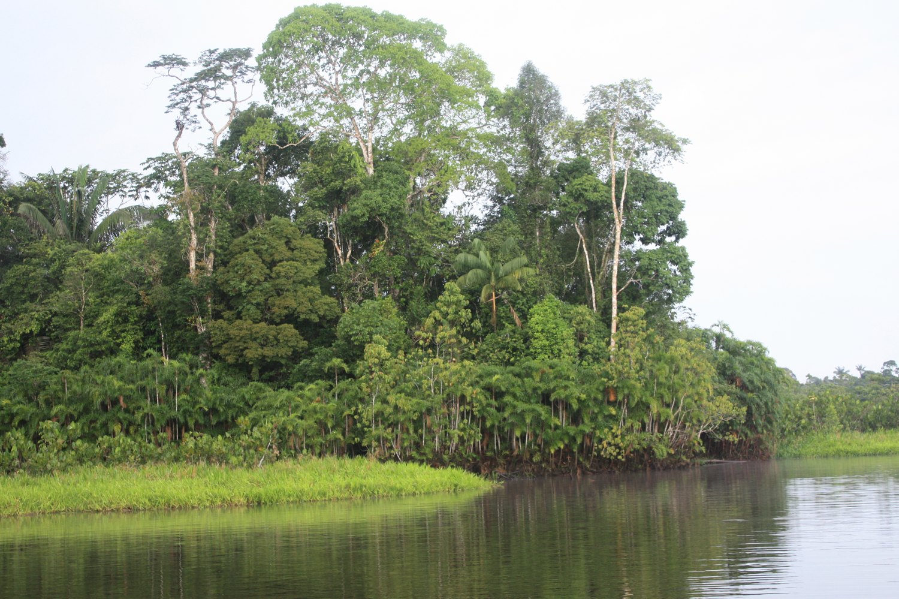

Formación científica
Bachillerato en Ciencias
Explora preguntas sobre el mundo natural con observación, experimentación y análisis de datos.
Ver perfil
El Coca · Amazonía ecuatoriana
Te damos la bienvenida. Conoce las opciones de bachillerato y encuentra la información que necesitas para tu próximo paso.
Bachillerato
Compara los perfiles, las áreas de estudio y las posibilidades después del bachillerato. Fotografías referenciales.

Explora preguntas sobre el mundo natural con observación, experimentación y análisis de datos.
Ver perfil
Desarrolla habilidades en programación, redes y soporte para resolver problemas con tecnología.
Ver perfilNuestro entorno
La biodiversidad y la diversidad cultural de Orellana ofrecen temas para investigar, trabajar en equipo y pensar soluciones para la comunidad.
Conoce nuestra propuesta institucional
Ejemplos de cómo se comunicarían los proyectos y las actividades estudiantiles.
Admisiones
Revisa qué información está pendiente y explora la ficha demostrativa de matrícula.